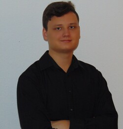

About Me
Some more or less interesting things about me...

Programming
BIO
Hi. My name is Frederik Diekmann and my passion is coding. I'm a
student for Business Informatics at the University of Mannheim and I
love programming and enjoy learning new things everyday.
I founded
codestudent.net, which is a blog about interesting topics on the world of
programming and computer science in general. On there I publish
articles together with my friend Liam.
One of my biggest interests is Data Science. I'm a member of
STADS e.V.
and I really enjoy learning new skills there.
Programming
Languages I know and use
- Java
- Python
- HTML, CSS, JavaScript and node.js
Data Science
Skills related to data cleaning and analysis
- Python
- Libraries like Pandas, Matplotlib, Seaborn etc.
- SQL
Other Interests
Things I enjoy learning about
- Machine Learning & AI
- Web Development
- Game Development